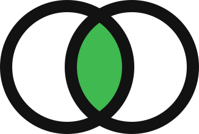

quorumSibyl Labs Hackathon · Sep 2026Six agents. One memory.
No messages between them.
Quorum runs six security lenses over Solidity. They have no queue, no broker and no way to call each other. Everything they know about each other, they read out of Sibyl Memory, and a finding is only ever published when two lenses reach it from different evidence.
- 6lenses, paired two per risk
- 5memory tiers, all load bearing
- 24units split across 3 processes, once each
- 1claim published on Base
It learns an idiom once
$ quorum run --targets fixtures/*.sol QUORUM VulnerableVault.sol:withdraw reentrancy corroborated by callorder-lens, guard-lens candidate VulnerableVault.sol:deposit unguarded-state-write only modifier-lens, held back
Then it knows it everywhere
# new process, contracts it has never read, verified source from Base mainnet $ quorum run recalled before reading any code: 2 confirmed pattern(s) RECALLED FriendtechSharesV1.sol:buyShares reentrancy first confirmed on VulnerableVault.sol (1 sighting was enough)
The signature hashes the idiom, not the identifiers, so msg.sender.call{value: amount}("") and protocolFeeDestination.call{value: protocolFee}("") match. weth.deposit{value: amountETH}() does not.
Take the memory away and there is no swarm
$ quorum run --no-memory scanned 24 lens-units | confirmed 0 | recalled 0 | candidates 12 nothing was confirmed, recalled or suppressed: without memory the swarm cannot corroborate, recognise or forget.
Where memory carries the weight
HOT · state
Work claims. Three processes split 24 units of work exactly once between them, with nothing passed between the agents.
WARM · entities
One finding, and the exact set of lenses that corroborated it. Quorum is counted here, not in any agent.
COLD · journal
Every sighting, promotion, suppression and on-chain claim, appended and timestamped.
REFERENCE
Idioms confirmed for good. This is what a fresh session reads before it reads any code.
ARCHIVE
What a human retired. Say it once and no later session reports that shape again.
Base mainnet
A confirmed finding is claimed on chain as a timestamped digest, and quorum verify recomputes it from memory.
Try it
git clone https://github.com/Yonkoo11/quorum && cd quorum python3 -m venv .venv && .venv/bin/pip install -e . .venv/bin/quorum fetch 0xCF205808Ed36593aa40a44F10c7f7C2F67d4A4d4 .venv/bin/quorum run --targets fixtures/*.sol # the swarm learns .venv/bin/quorum run # a fresh session recognises .venv/bin/quorum swarm --workers 3 # three processes, one memory .venv/bin/quorum run --no-memory # the deletion test
Facts
| Base claim | 0xa648821d…, block 51138878, calldata QUORUM1 plus the digest |
| Memory | Sibyl Memory, all five tiers, local first. Findings never leave the machine. |
| Lenses | Six, paired two per risk: reentrancy, unguarded state write, unsafe math |
| Tests | 10, including the deletion test and the claim protocol |
| Session | demo.cast, the real recording behind the video |